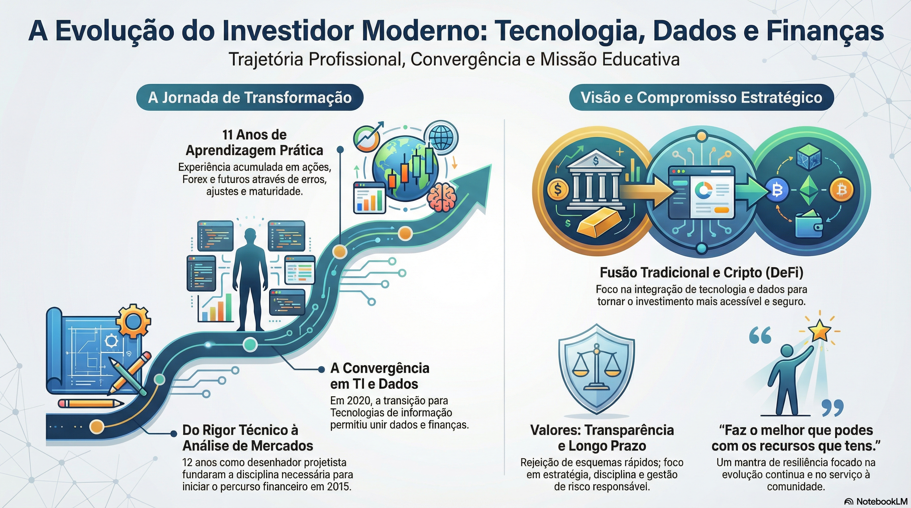

💼 A minha história
O meu percurso profissional começou como desenhador projetista, área onde trabalhei durante 12 anos. Foi um período importante de disciplina, rigor técnico e responsabilidade — competências que mais tarde se revelariam essenciais no mundo financeiro.
Em 2015 nasceu o meu verdadeiro interesse pelos mercados financeiros. Inscrevi-me num curso de Análise Bolsista e Produtos Financeiros pela Universidade Europeia, em regime e‑learning. Apesar de não o ter conseguido concluir por motivos familiares, foi nesse ano que comecei a realizar as minhas primeiras análises de mercado.
Iniciei-me nas ações, passei pelos CFD's, explorei o Forex, índices e futuros. Como muitos iniciantes, cometi erros motivados pela ilusão de resultados rápidos, mas nunca desisti. Aprendi na prática: errando, ajustando estratégias e ganhando maturidade como investidor.
Em 2017 decidi preparar o acesso à Licenciatura em Finanças (maiores de 23), com o objetivo de aprofundar a base académica. Mais uma vez, circunstâncias familiares obrigaram-me a interromper esse caminho.
Em 2020, em pleno período de pandemia, tomei uma decisão que mudaria o meu futuro: investir na área de Tecnologias de Informação de Gestão, através de um CET em regime noturno. O objetivo era claro — criar novas oportunidades profissionais e mudar de cidade.
No final de 2021 consegui concretizar essa mudança para o Porto, onde desenvolvi não só competências técnicas em informática, bases de dados e análise de dados, como também fortes capacidades interpessoais.
Foi aqui que tudo começou a fazer sentido: unir tecnologia, dados e finanças tornou-se a minha maior paixão.
Hoje trabalho em TI e aprofundo diariamente o meu conhecimento em mercados tradicionais e criptoativos.
O sonho de concluir a licenciatura em Finanças e tornar-me analista financeiro certificado pela CMVM continua vivo.
Faz o melhor que podes, com os recursos que tens, no momento presente.

🎯 Missão
Facilitar pessoas a tomar decisões financeiras conscientes e estratégicas através da educação, análise de dados e tecnologia, unindo mercados tradicionais e criptoativos de forma prática e transparente.
O meu compromisso é transformar conhecimento complexo em soluções simples, ajudar investidores a evitarem erros comuns e promover uma gestão de capital responsável, sustentável e orientada para o longo prazo.
🌍 Visão
Construir uma comunidade financeira moderna onde tecnologia, dados e investimentos trabalham juntos para gerar liberdade financeira, crescimento consistente e autonomia.
Ser uma referência na integração entre finanças tradicionais e o ecossistema cripto — especialmente em soluções DeFi — criando ferramentas, conteúdos e projetos que tornem o investimento mais acessível, seguro e inteligente para todos.
🎯 Os meus objetivos
- Facilitar o acesso ao conhecimento financeiro.
- Unir tecnologia, dados e investimentos de forma prática.
- Ajudar iniciantes a evitarem erros comuns nos mercados.
- Criar ferramentas reais de gestão financeira e de portfólio.
- Construir uma comunidade focada em crescimento sustentável.
Não acredito em esquemas rápidos de enriquecimento. Acredito em estratégia, disciplina, dados e visão de longo prazo.
💎 Os meus valores
Transparência
Nada de promessas irreais.
Educação contínua
O mercado muda todos os dias.
Responsabilidade financeira
Gerir risco é essencial.
Comunidade
Vamos mais longe juntos.
Serviço
Conhecimento só faz sentido quando é partilhado.
Inovação com propósito
Tecnologia ao serviço de melhores decisões financeiras.
🤝 Um convite
Entrei nos mercados financeiros em março de 2015 — são 11 anos de aprendizagem, erros, evolução e construção.
Se gostas de investimentos, tecnologia, dados ou simplesmente queres aprender a gerir melhor o teu dinheiro, estás no sítio certo.
Vamos caminhar juntos.
Eu ajudo-te a crescer.
Tu ajudas-me a melhorar.
Porque, no final, o verdadeiro valor está em servir, partilhar e evoluir em comunidade.